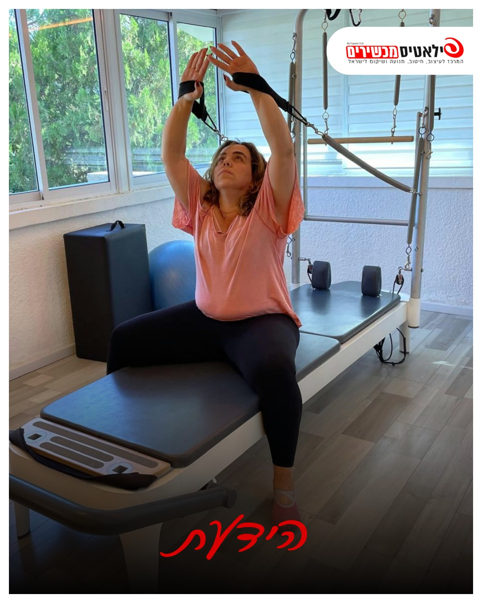

כתף קפואה: למה היד לא מגיעה לסוגר של החזייה, ומה עושים בכל שלב

בבוקר את מתלבשת.
מושיטה יד לאחור לסגור את החזייה.
והיד נעצרת באמצע הדרך.
בהתחלה חשבת שישנת לא טוב.
אחר כך הכאב התחיל להעיר אותך בלילה.
ועכשיו גם להוריד צלחת מהמדף העליון זה סיפור.
ככה מתחילה הרבה פעמים כתף קפואה.
בשקט, לאט, ובעיקר אצל נשים בין 40 ל-60.
והיא עוברת. אבל הדרך עוברת דרך תנועה, לא דרך מנוחה.
מה זה בכלל כתף קפואה
מסביב למפרק הכתף יש קופסית - מעטפת רכה שמחזיקה את המפרק.
בכתף קפואה הקופסית הזו מתדלקת, מתעבה ומתכווצת.
המפרק פשוט מאבד מקום לזוז.
לכן היד נעצרת, גם כשהשרירים חזקים.
לא תמיד יודעים למה זה קורה.
לפעמים זה מתחיל אחרי מכה קטנה או תקופה שהיד הייתה בשקט.
ולפעמים בלי שום סיבה.
שלושה שלבים, ולכל אחד יש מה לעשות
שלב הכאב
הכתף כואבת, גם במנוחה, ובעיקר בלילה.
התנועה מתחילה להיסגר.
פה לא מתאמצים ולא "שוברים" את הכאב.
תנועה עדינה, כל יום, בטווח שלא מכאיב.
שלב הקיפאון
הכאב יורד, אבל הכתף נוקשה.
קשה להרים את היד, קשה להגיע מאחורי הגב.
פה אפשר להתחיל להאריך את הטווח, לאט ובסבלנות.
שלב ההפשרה
הכתף מתחילה להשתחרר.
התנועה חוזרת, צעד אחרי צעד.
פה מחזקים, כדי שהכתף תחזור לעבוד ולא רק לזוז.
כל התהליך לוקח בדרך כלל בין שנה לשלוש.
זה נשמע הרבה.
אבל מי שמבינה באיזה שלב היא נמצאת, יודעת מה נכון לעשות היום.
מה המחקרים אומרים
- כתף קפואה פוגעת בערך ב-2 עד 5 אנשים מכל 100, רוב הזמן בגילאי 40 עד 60, ויותר אצל נשים.
- אצל אנשים עם סוכרת היא שכיחה הרבה יותר. גם בעיות בבלוטת התריס קשורות אליה.
- רוב האנשים משתפרים עם הזמן. אצל חלק נשארת הגבלה קלה בתנועה גם אחרי כמה שנים.
- במחקר מהולנד (2004) מתיחות עדינות, בגבול הכאב, הביאו תוצאות טובות יותר ממתיחות חזקות שדוחפות לתוך הכאב.
- זריקה למפרק, שהרופא מחליט עליה, יכולה להקל על הכאב בשלב הראשון. היא לא מחליפה את התנועה.
שלוש טעויות נפוצות
- לא לקשור את היד לגוף ולחכות שזה יעבור. כתף שלא זזה, נסגרת עוד.
- לא למשוך בכוח ולהתאמץ דרך כאב חד. הכתף מגיבה בדלקת, ומחר יהיה קשה יותר.
- לא לבדוק כל יום כמה רחוק היד מגיעה. מסתכלים על חודש, לא על יום.
ארבעה תרגילים לבית
כל תרגיל - לאט, עם נשימה.
מותר להרגיש מתיחה. כאב חד - עוצרים.
פעם או פעמיים ביום, עדיף אחרי מקלחת חמה.
1. הרמה בשכיבה, עם מקל
שוכבת על הגב, ברכיים כפופות.
מחזיקה מקל או מטאטא בשתי הידיים, ברוחב כתפיים.
היד הבריאה עושה את העבודה ומרימה את המקל מעל הראש, לאט.
היד הכואבת רק נוסעת איתה.
עוצרת כשמרגישה מתיחה, ויורדת.
8 פעמים.
2. סיבוב החוצה, מרפק צמוד
עומדת, המרפק של היד הכואבת צמוד לגוף, כפוף בזווית ישרה.
מחזיקה מקל בשתי הידיים.
היד הבריאה דוחפת את המקל, והאמה של היד הכואבת זזה החוצה.
המרפק נשאר צמוד לגוף כל הזמן.
חמש שניות, וחוזרת.
8 פעמים.
3. מגבת מאחורי הגב
מחזיקה מגבת ביד הבריאה, מעל הכתף, כך שהיא נופלת לאורך הגב.
היד הכואבת תופסת את הקצה התחתון, מאחורי הגב.
היד העליונה מושכת את המגבת למעלה, לאט.
היד הכואבת עולה איתה, רק כמה שנוח.
חמש שניות, וחוזרת.
5 פעמים.
4. כיווץ שכמות
יושבת זקופה על כיסא, ידיים על הירכיים.
מקרבת את השכמות אחת לשנייה ומטה, כאילו מכניסה אותן לכיסים האחוריים.
הכתפיים לא עולות לאוזניים.
חמש שניות, ומשחררת.
10 פעמים.
זה מחזיר לשכמה את העבודה שלה, וזה מוריד עומס מהכתף.
מתי הולכים קודם לרופא
לפני שמתחילים להתאמן - אם יש לך אחד מאלה:
- כאב בכתף שמאל יחד עם לחץ בחזה, קוצר נשימה או זיעה קרה - זה מיון, עכשיו
- הכאב התחיל אחרי נפילה, ואת לא מצליחה להרים את היד בכלל
- חולשה פתאומית ביד, או נימול שיורד לאצבעות
- כתף אדומה, חמה ונפוחה, או חום
- כאב שמחמיר בלילה יחד עם ירידה במשקל בלי סיבה
- עוד לא קיבלת אבחנה. כתף קפואה, קרע בגיד ודלקת בגיד נראות דומה בהתחלה, והטיפול שונה
ואם יש לך סוכרת - שווה לבדוק שהיא מאוזנת.
זה חלק מהטיפול בכתף.
מה עושים בסטודיו
על הרפורמר הכתף עובדת עם קפיצים קלים, שמלווים את התנועה ולא נלחמים בה.
אני מתאימה את התרגיל לשלב שאת נמצאת בו:
בשלב הכאב - תנועה קטנה ונעימה.
בשלב הקיפאון - מאריכים את הטווח, מילימטר אחרי מילימטר.
בשלב ההפשרה - מחזקים את הכתף ואת השכמה.
בקבוצות קטנות, ואני רואה כל אחת.
אחרי השבץ בגיל 45 הייתי משותקת בחצי גוף.
אני יודעת מה זה יד שלא מקשיבה לך.
ואני יודעת שהגוף לומד מחדש, אם נותנים לו זמן ותנועה.
אם את מזהה את עצמך בזה, השאירי פרטים ונחזור אלייך בהקדם 👇